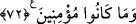

Farsça tefsirde şöyle denilmektedir: Bu putların her birine bir isim konulmuş: Bir
kısmına “Sâika” denmiş. Onlar, yağmurun onların sayesinde yağdığını zannederlerdi.
Yolculukta kendilerini koruduğuna inandıklarına “Hâfıza” derlerdi. “Râzika” ve
“Sâlime” de bunlar gibidir. Bu lafızlar, müsemmâsı olmayan isimlerdir. Çünkü cansız
olan putların gücü yoktur. Hûd (a.s.) şöyle buyurdu: Cehaletiniz sebebiyle isimler
koyduğunuz bu şeylerle tartışıyorsunuz.
“Bizi tehdit ettiğin (o âzâb)ı bize getir.” diyerek taleb ettiğiniz azabı “bekleyin
öyleyse, ben de sizinle berâber” size gelip çatacak azabı “bekleyenlerdenim.”
72. Onu ve onunla beraber olanları rahmetimizle kurtardık ve ayetlerimizi
yalanlayıp da iman etmeyenlerin kökünü kestik.
Hûd (a.s.)’ın kavmini tehdit ettiği azab vuku buldu, “Onu” Hûd’u “ve” dinde
“onunla berâber olanları rahmetimizle” bizim tarafımızdan onlara olan büyük bir
rahmetle “kurtardık.”
Burada Hûd (a.s.)’ın nübüvvet rütbesine ve risâlet derecesine rağmen, onun ve onunla
beraber olan mü‘minlerin ancak Allah tarafından bir rahmetle kurtulduklarına işaret
edilmektedir. Bu ifâde, kurtuluşun sadece amel ile değil, Allah‘ın fazlı ve rahmeti ile
olduğunun bilinmesi içindir. O ancak Allah’ın lütfu ile kurtulmuştur.
“Ayetlerimizi yalanlayanların ve inanmayacak olanların” küfür ve yalanlamada
ısrar eden ve bu durumlarından asla geri dönmeyenlerin “arkasını kestik.” yani
köklerini kazıdık, köklerini ve damarlarını kopararak hepsini helâk ettik. Çünkü bir
şeyin arkası demek, onun sonu demektir. Kavmin arkasının kesilmesi ise baştan sona
hepsinin helâk edilmesidir.
Ayette helâk olmanın sebebi küfür ve yalanlama olduğu gibi kurtuluşun dayanağının da
Allah’a iman ve ayetlerini tasdik olduğuna dikkat çekilmektedir.
Âd kavminin kıssası şöyledir:
Âd kavmi, Yemen’de Ahkâf bölgesinde oturuyorlardı. Burası, Ummân ile Hadramevt
arasında Âlic ve Dehman çölü denilen çöl bölgesidir. Oradan yeryüzüne yayıldılar.
Allah Teâlâ’nın kendilerine verdiği kuvvetle vardıkları yerlerdeki insanlara galib
geliyorlardı. İbadet ettikleri, Sadâ, Samûd ve Bahâ adlı üç tane putları vardı. Allah
Teâlâ onlara neseb bakımından orta halli, haseb bakımından da en faziletlileri olan Hûd
(a.s.)’ı peygamber olarak gönderdi. Onlara Allah’ı birlemelerini, O’dan başkasına
kulluk etmemelerini ve insanlara zulmetmekten vazgeçmelerini emretti. Ona karşı
geldiler ve onu yalanladılar. “Bizden daha kuvvetli kim vardır?” diyerek gururlandılar,
kibirlendiler. Allah, üç yıl üzerlerine hiç yağmur yağdırmadı. Pek zor durumda kaldılar.